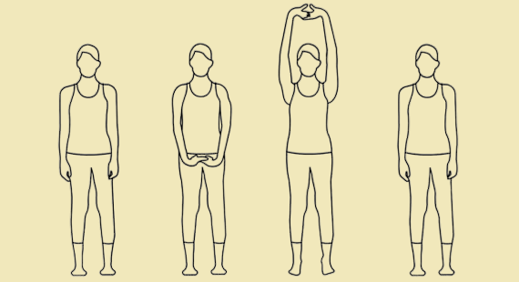
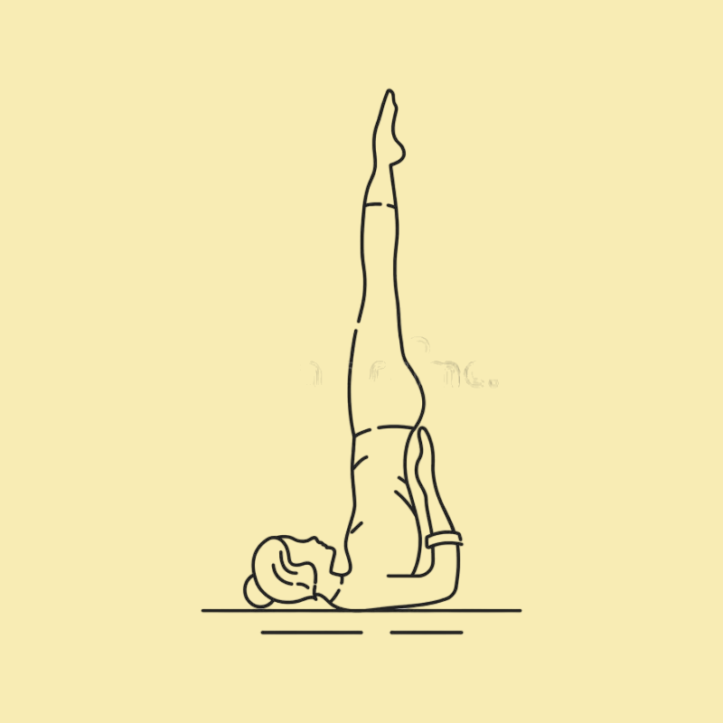

Yoga

Tadasana (Mountain Pose)
Description: Tadasana is a foundational standing pose that promotes good posture, balance, and body awareness. It's a great starting point for many yoga sequences.
- Improves posture and alignment.
- Strengthens the legs, ankles, and core.
- Promotes mindfulness and grounding.
- Enhances lung capacity and breathing.

Sarvangasana (Shoulder Stand)
Description: Sarvangasana is an inversion pose that involves supporting the body on the shoulders. It offers a range of benefits for the entire body and is often called the "queen of asanas."
- Stimulates the thyroid gland, benefiting metabolism.
- Improves blood circulation and lymphatic flow.
- Strengthens the shoulders, neck, and core muscles.
- Relieves stress and calms the nervous system.

Nadi Shodhana (Alternate Nostril Breathing)
Description: Nadi Shodhana is a balancing pranayama technique that involves alternating the breath between the nostrils. It promotes balance in the nervous system and a sense of calmness.
- Balances the left and right hemispheres of the brain.
- Reduces stress and anxiety levels.
- Enhances concentration and mental clarity.
- Regulates the flow of prana (life force energy) in the body.

Bhramari Pranayama (Bee Breath)
Description: Bhramari involves producing a humming sound while exhaling, similar to the buzzing of a bee. This pranayama has a calming effect on the mind and nervous system.
- Relieves tension, anxiety, and insomnia.
- Soothes the nervous system and lowers blood pressure.
- Helps in focusing the mind and improving concentration.
- Promotes relaxation and a sense of inner peace.